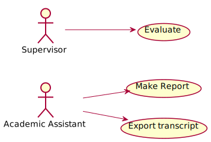

Use-Case Model¶

Evaluate¶
Brief Description¶
This use case allows Supervisor to evaluate the project.
Flow of Events¶
Basic Flow¶
Supervisor request to evaluate the project.
System receive the request provide an evaluation and comment.
Supervisor provide evaluation with comments.
System receive the data and terminate the project.
Alternative Flow¶
Missing information
If in step 3, the Supervisor missed to fill in a necessary field, the system display an alert message. Supervisor can either fill in missing fields or cancel the operation.
Pre-Conditions¶
User must be Supervisor and be logged in the system before this use case begins.
Post-Conditions¶
After this use case ends, other project-related use case could not be executed.
Make Report¶
Brief Description¶
This use case allows Academic Assistant make report base on the result of the project.
Flow of Events¶
Basic Flow¶
Academic Assistant requests to make a report.
System receives the request and displays the result of the project.
Academic Assistant requests to make a hard copy.
System responses by a document file format of the report.
Academic Assistant downloads the file for printing purpose later.
Alternative Flow¶
- Project has not done
If in step 2, Student has not provided the result, the system will display a message that the report is not yet ready and terminate the operation. The system will then notify Student by sending an email or via notification bar.
Pre-Conditions¶
User must be Academic Assistant and be logged in the system before this use case begins.
Academic Assistant must search and select the project(s) before the use case begins.
Post-Conditions¶
The system state is unchanged.
Export Transcript¶
Brief Description¶
This use case allows Academic Assistant to export transcript based on the evaluation of Supervisor.
Flow of Events¶
Basic Flow¶
Academic Assistant requests to export the transcript.
System receives the request and displays the evaluation of Supervisor.
Academic Assistant requests to make a hard copy.
System responses by a document file format of the transcript.
Academic Assistant downloads the file for printing purpose later.
Alternative Flow¶
- Not yet evaluated
If in step 2, Supervisor has not given the evaluation, the system will display a message that the transcript is not ready yet and terminate the operation. The system will then notify Supervisor by sending an email or via notification bar.
Pre-Conditions¶
User must be Academic Assistant and be logged in the system before this use case begins.
Academic Assistant must search and select the project(s) before the use case begins.
Post-Conditions¶
The system state is unchanged.